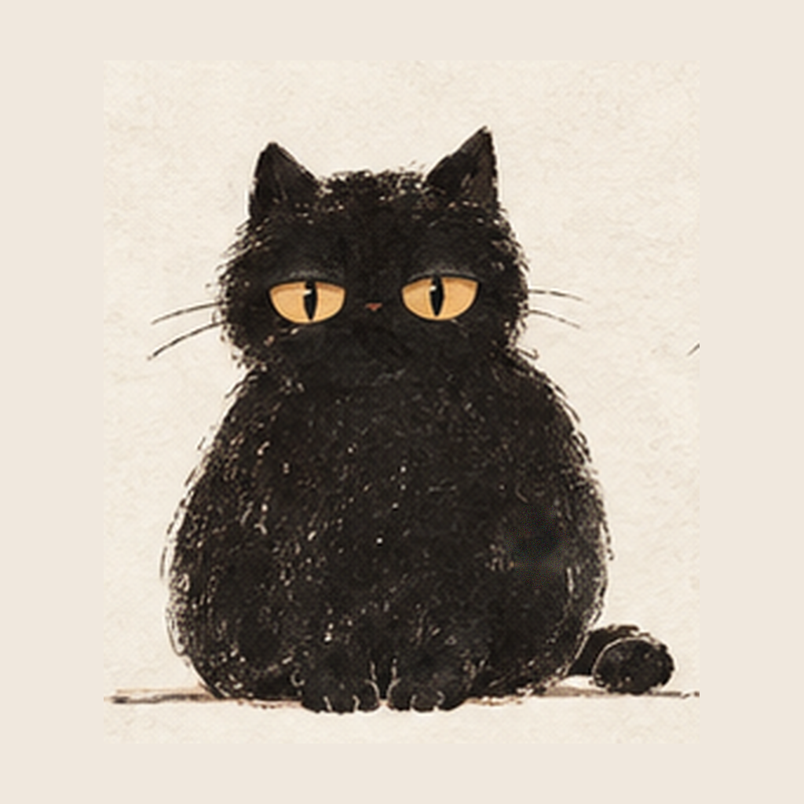
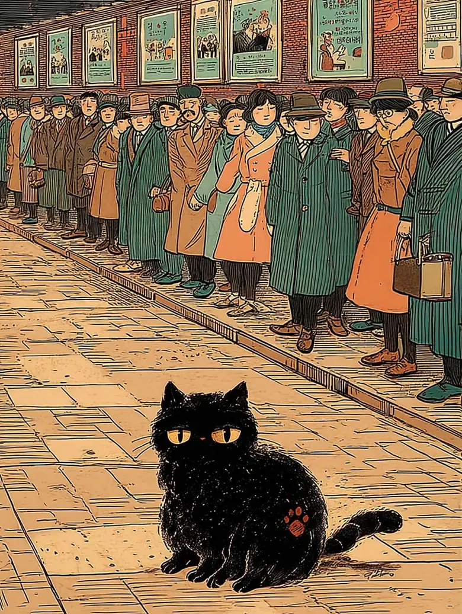

一九三〇年代 · 京城


심묘한 산책
인쇄소에서 활자 「ㄱ」 하나가 사라졌다. 범인은 글을 모르는 까만 고양이.
그 고양이가 지나간 자리마다, 경성의 글자에서 ㄱ이 빠졌다.
그림은 재현입니다 · 장소와 연도와 지면은 사실입니다
一九三〇年代 · 京城

인쇄소에서 활자 「ㄱ」 하나가 사라졌다. 범인은 글을 모르는 까만 고양이.
그 고양이가 지나간 자리마다, 경성의 글자에서 ㄱ이 빠졌다.
그림은 재현입니다 · 장소와 연도와 지면은 사실입니다

사람 눈 · 원래의 색
마우스가 지나가는 곳은 고양이 눈으로 보입니다